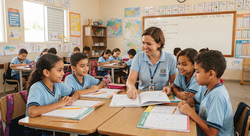

menu_book
Compromisso Nacional Criança Alfabetizada
Alfabetização na Idade Certa para Toda Criança Miguelense
A Rede Municipal de Ensino de São Miguel dos Campos fortalece as práticas de letramento, materiais pedagógicos estruturados e avaliação diagnóstica contínua no 1º e 2º ano do Ensino Fundamental.
